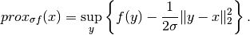
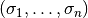
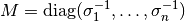
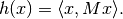

FunctionalSum.proximal¶
- property FunctionalSum.proximal¶
Proximal factory of the functional.
Notes
The proximal operator of a function
 is an operator defined as
is an operator defined as
Proximal operators are often used in different optimization algorithms, especially when designed to handle nonsmooth functionals.
A
proximal factoryis a function that, when called with a step length , returns the corresponding proximal operator.
, returns the corresponding proximal operator.The nonsmooth solvers that make use of proximal operators to solve a given optimization problem take a
proximal factoryas input, i.e., a function returning a proximal operator. See for exampleforward_backward_pd.In general, the step length
is expected to be a
positive float, but certain functionals might accept more types of
objects as a stepsize:If a functional is a
SeparableSum, then, instead of a positive float, one may call theproximal factorywith a list of positive floats, and the stepsize are applied to each component individually.For certain special functionals like
L1NormandL2NormSquared, which are not implemented as aSeparableSum, the proximal factory will accept an argument which iselement-likeregarding the domain of the functional. Its components must be strictly positive floats.
A stepsize like  coincides with a matrix-valued distance according to Section XV.4 of [HL1993] and the rule

or the Bregman-proximal according to [E1993] and the rule

References
[HL1993] Hiriart-Urruty J-B, and Lemaréchal C. Convex analysis and minimization algorithms II. Advanced theory and bundle methods. Springer, 1993.
[E1993] Eckstein J. Nonlinear proximal point algorithms using Bregman functions, with applications to convex programming. Mathematics of Operations Research, 18.1 (1993), pp 202--226.